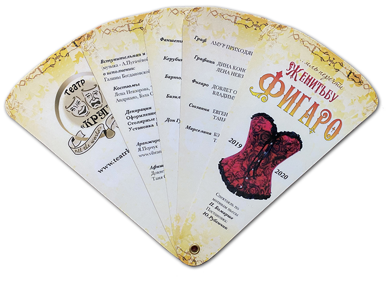
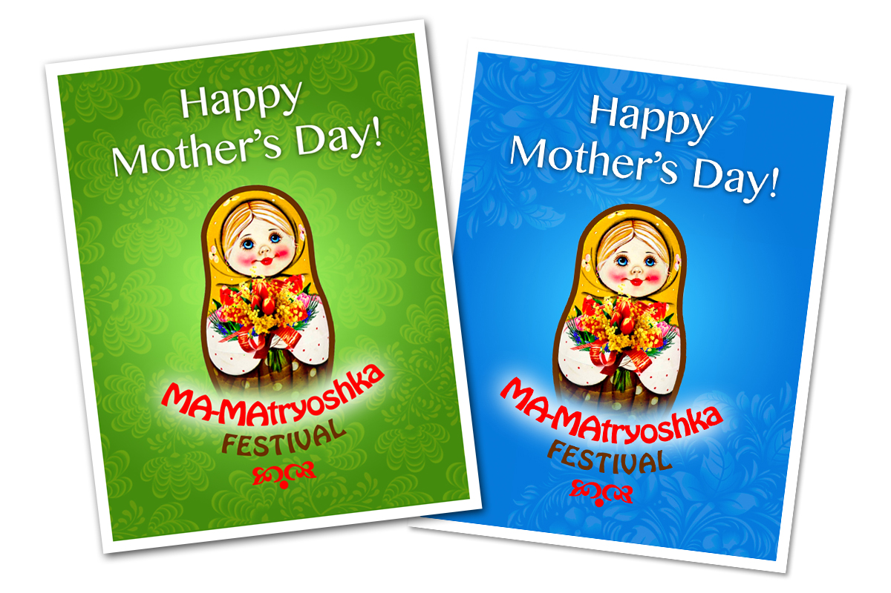
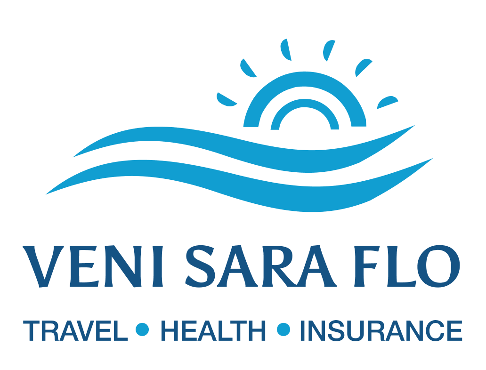
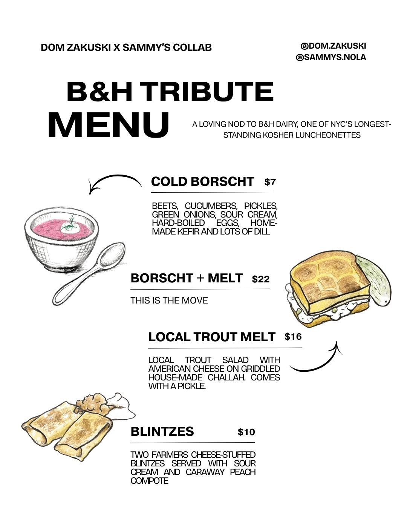
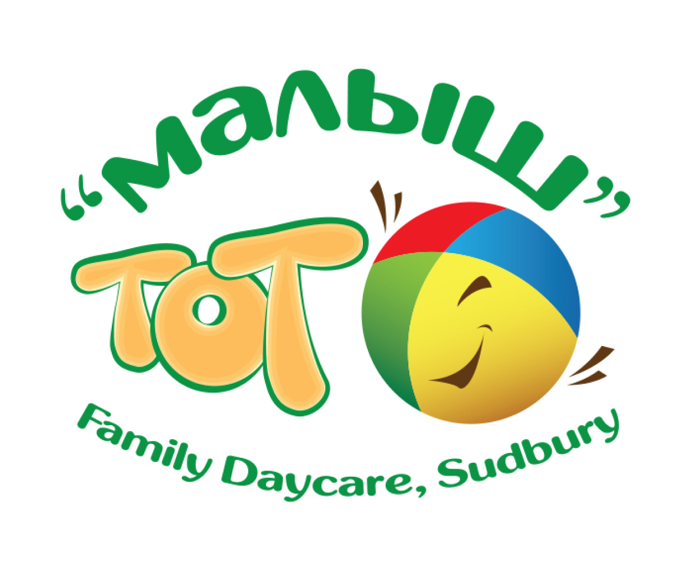
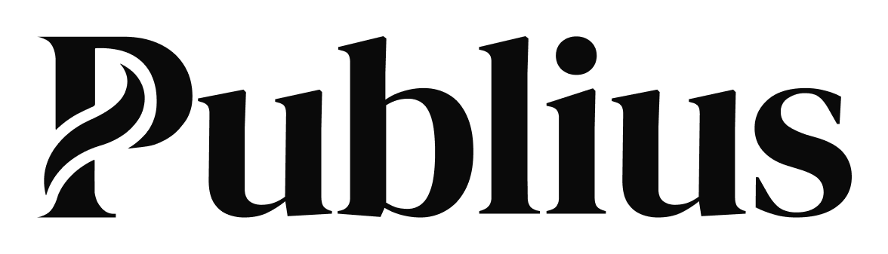

About Me
I love my craft. I have experience working with small, medium-sized, and large-scale companies. I've worked in small, tight design teams, in communities of hundreds of creative professionals, as well as completely solo—where I was the only designer in the entire organization.
My expertise spans print (long long ago), websites, desktop and web applications, mobile applications, and most recently, design systems. Because of these experiences, I think of myself as a versatile, multi-faceted designer and technologist. I value openness, communication, and transparency above all when working with teams and people from all walks of life.
I am always learning—about technology, my craft, and myself. This journey has been incredible so far.
My Personal Whys
I have a great empathy for people around me trying to deal with craziness and incredible velocity the reality unfold in front of our eyes.
Where ones thrive, other struggles and feel venerable and overwhelmed. I want to see a world a friendlier place one digital product in a time.
Outside of work
I like to get involved in fun and at the same time meaningful activities. Giving back to community is something that brings me fulfillment and genuine joy.
Here are a few samples of work I've created over the years.






